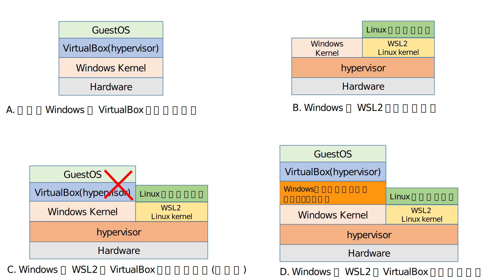

VirtualBox/VMWare と WSL2 は共存可能です。 しかし、共存させると VirtualBox/VMWare 上の GuestOS にオーバーヘッドがかかります。
今回はオーバーヘッドの概要と、共存と排他の設定切り替え方法のネタです。
VirtualBox と WSL2 共存のオーバーヘッド
以下に VirtualBox と WSL2 の実行時の階層図を示します。

この図は、次の 4 つの状態を表わしています。
- (A) 従来の Windows で VirtualBox を動かす状態
- (B) Windows で WSL2 を動かす状態
- (C) Windows で WSL2 と VirtualBox を動かす状態(異常時)
- (D) Windows で WSL2 と VirtualBox を動かす状態(正常時)
(A) は、 WSL サポート前の Windows で VirtualBox を動かしていた状態です。 Windows 上に VirtualBox があり、 その上に GuestOS が動作していました。
(B) は、Windows で WSL2 を動かしている状態です。 WSL2 では、 ハードウェアの上に hypervisor があり、 その上に Windows カーネルと Linux kernel があります。
(C) は、WSL2 と VirtualBox を共存させようとしている状態です。 この場合 VirtualBox に × を付けていますが、 これは VirtualBox が動かないことを示しています。
Windows Kernel が hypervisor 上で動いている場合、 (A) の形態の VirtualBox は動きません。 VirtualBox を動かすには (D) のように 「Windowsハイパーバイザープラットフォーム」 が必要です。
これにより、 (D) の VirtualBox は (A) と比べると オーバーヘッドがあることが分かります。 アプリによってその影響度合いは異なりますが、 私の用途的に 約 100 〜 200% 程度の性能劣化 がありました。
WSL2 に移行し、 VirtualBox はほとんど使用しないようなケースでは、 VirtualBox にオーバーヘッドがあっても問題ありません。 しかし、「VirtualBox も捨て切れない」というケースもあると思います。
WSL2 への移行の過渡期などは特にそうなるでしょう。
そこで、 VirtualBox の 性能を重視した (A) と、 WSL2 との共存可能な (D) を切り替えて使うための方法 を 以下で示します。
VirtualBox/VMWare と WSL2 の共存と、 VirtualBox/VMWare 占有の切り替え方法
(D) の構成と (A) の構成を比べた場合、次の 2 つが異なります。
- hypervisor
- windows ハイパーバイザープラットフォーム
この 2 つの無効・有効を切り替えることで、 (D) と (A) を切り替えられます。
この 2 つの無効・有効を切り替えるには、 PC の再起動が必要 になります。 再起動が必要なのは、使い勝手に問題があると言わざるを得ないですが、 hypervisor がカーネルよりも下にあることを考えると、 有効・無効に再起動が必要になるのは仕方がないと納得するしかないです。。
なお、この 2 つの無効・有効の切り替え処理には、 さほど時間はかかりません。 これは、せめてもの救いです。
(D) から (A) に切り替える
(D) から (A) に切り替えるには、 管理者権限の power shell で以下を実行してから、 PC を再起動します。
# hypervisor の無効化
C:\Windows\System32\bcdedit.exe /set hypervisorlaunchtype off
# windows ハイパーバイザープラットフォームの無効化
Disable-WindowsOptionalFeature -online -featurename HypervisorPlatform -NoRestartなお、 hypervisor だけ無効化し、 windows ハイパーバイザープラットフォーム が有効な状態だと、 本来は windows ハイパーバイザープラットフォーム を使わなくても VirtualBox は動くはずです。 しかし実際には、windows ハイパーバイザープラットフォームを使って 余計なオーバーヘッドがかかってしまうようです。
よって、2 つとも無効にする必要があります。
(A) から (D) に切り替える
(A) から (D) に切り替えるには、 管理者権限の power shell で以下を実行してから、 PC を再起動します。
# windows ハイパーバイザープラットフォームの有効化
Enable-WindowsOptionalFeature -online -featurename HypervisorPlatform -NoRestart
# hypervisor の有効化
C:\Windows\System32\bcdedit.exe /set hypervisorlaunchtype autoまとめ
WSL や docker のような技術は軽くて便利ではありますが、 VirtualBox のようにハードウェアを仮想化する環境が 必要になるケースは今後もあるでしょう。
そのような時に、オーバーヘッドが気にならない程度に改善されることを期待します。
もしかしたら、 Win11 では既に改善されていたりするんだろうか？